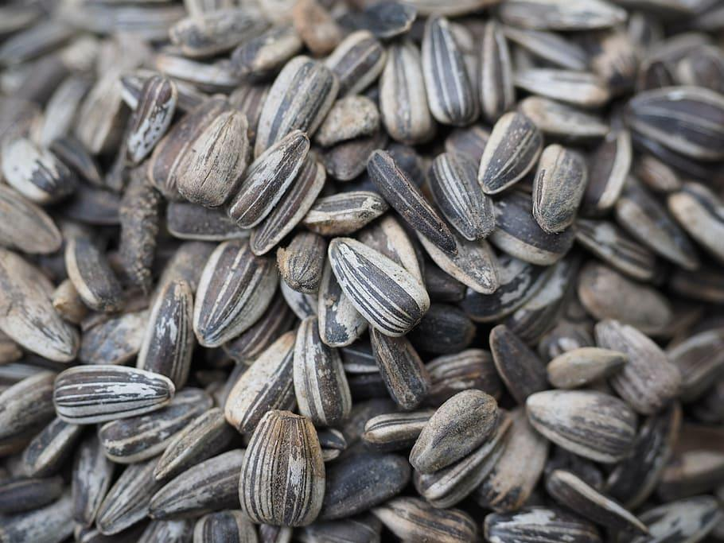
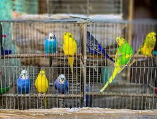
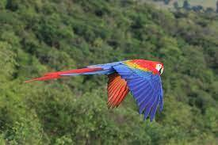

Curiosidades, criação, alimentação e muito mais!
|  |  |  |
|---|---|---|
| Semente, ração ou frutas? | Gaiolas ou viveiros? | Asas: Cortar ou não cortar? |
| Quais alimentos contribuem mais para a saúde dos pássaros? | O lar de um pássaro é essencial para o bem estar dele. | Qual a opção mais benéfica para os animais? |